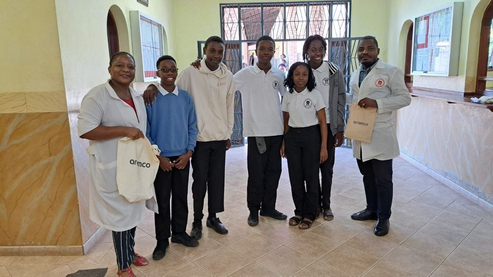

Tecnologia com Impacto Social e Humanidade
Uma constelação de jovens resilientes de Marracuene brilhou no palco mundial. Cada membro trouxe não apenas talento, mas também paixão e coragem para transformar desafios em soluções que ecoam além das fronteiras.
Mais do que um exercício académico, o robô nasceu da empatia e da escuta ativa. Inspirados pelas mulheres que trabalham incansavelmente nos campos agrícolas com bebés às costas, os jovens da ECOSAF imaginaram um sistema automatizado que reduz o esforço físico e devolve dignidade ao trabalho rural. Cada linha de código e cada peça montada carregava o peso da esperança de uma comunidade inteira.
A presença da ECOSAF na Olimpíada Mundial de Robótica não foi apenas uma competição: foi uma declaração ao mundo de que Moçambique é terreno fértil para inovação. A equipa provou que tecnologia deve ser ponte para o desenvolvimento humano, inspirando não só a escola, mas também uma geração que acredita que o futuro pode ser reinventado.

Cada sorriso, cada gesto e cada momento vivido na competição internacional é um testemunho da força de uma juventude que ousa sonhar e transformar.